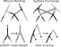

Modelling genetic change

Consider a system with two states (0 and 1) and a transition rate matrix $$Q = \left[\begin{array}{cc} - & 2 \\ 1 & - \end{array}\right]$$
Gives rise to the following trajectories:
Time $\Delta t$ spent in state before transition: $$ P(\Delta t|x) = \lambda e^{-\lambda \Delta t}$$ where $\lambda = \sum_{x'\neq x}Q_{x'x}$.
The probabilty that a site is distinct after time $t$ is \begin{align*} p_{\text{diff}}&=\sum_{x'\neq x} P(X(t)=x'|X(0)=x)\\ &=\frac{3}{4} - \frac{3}{4}e^{-\frac{4}{3}\mu t} \end{align*}
Equating $p_{\text{diff}}$ with the $p$-distance and solving for $\mu t$ yields $$\hat{d} = \widehat{\mu t} = -\frac{3}{4}\log(1-\frac{4}{3}p).$$
Gamma distribution rate heterogeneity allows for variation in evolutionary rate among sites according to $$f(r) = \frac{\alpha^{\alpha}}{\Gamma(\alpha)}r^{\alpha-1}e^{-\alpha r}$$
Analytical solution exists for JC distance with site rate heterogeneity: $$\hat{d}=-\frac{3}{4}\alpha\left[1-\left(1-\frac{4}{3}p\right)^{-1/\alpha}\right]$$
| $p$-distance | JC69 | K80 | Tajima-Nei | |
|---|---|---|---|---|
| HIV-O | 0.391 | 0.552 | 0.560 | 0.572 |
| SIVcpz | 0.266 | 0.337 | 0.340 | 0.427 |
| HIV-1C | 0.163 | 0.184 | 0.187 | 0.189 |
| $p$-distance | JC69 | K80 | Tajima-Nei | |
|---|---|---|---|---|
| HIV-O | 0.257 | 0.315 | 0.318 | 0.324 |
| HIV-1C | 0.103 | 0.111 | 0.113 | 0.114 |
Comments:
$$P(A|T, \mu)$$
For internal nodes, $$L_k(s) = \left(\sum_xP(x|s)L_{c_l}(x)\right)\left(\sum_yP(y|s)L_{c_r}(y)\right)$$
Time complexity for $m$ sites: $m(n-1)4^2$. This is the workhorse of computational phylogenetics.
Need a better approach!
$$P(T,\mu,\theta|A) = \frac{1}{P(A)}P(A|T,\mu)P(T|\theta)P(\mu,\theta)$$
Because of the way we've factorized the joint probability for the data and model parameters, we are implicitly assuming that our alignment could have been produced in the following fashion:
Separating the process of tree generation from that of sequence evolution implies neutrality.
Need to identify a set of proposals $q_j(x'|x)$ when $x$ is a point in the space of rooted time trees.
- How can we tell when a phylogenetic MCMC calculation has reached equilibrium?
- How do we know when we've collected enough samples?
The AWTY application applies a number of different statistics to assess the convergence of the tree state. It relies heavily on comparing the result of multiple runs.
Logs of individual parameters can be considered samples from the marginal posteriors of those parameters.
In BEAST, summary trees are produced using the MCC tree method via the program TreeAnnotator.
Popular Bayesian phyogenetic inference software:
Some software implementing special models:
... there are many others!
For many bacteria, the ratio between the recombination rate and the mutation rate is extremely high.
| Pros | Cons |
|---|---|
|
|
| Pros | Cons |
|---|---|
|
|
| Parameters | |
|---|---|
| $N(t)g$ | Coalescence rate |
| $\rho_s$ | Recombination rate |
| $\delta$ | Expected tract length |
Inference follows the standard Bayesian phylogenetic tradition:
\begin{equation*} f(G,N,\mu,\rho,\delta|A) \propto P_{F}(A|G,\mu)f_{CGC}(G|N,\rho,\delta)f_{\text{prior}}(N ,\mu,\rho,\delta) \end{equation*}where
The genealogy density under ClonalOrigin model can be expanded
\begin{equation*} f_{CGC}(G|\rho',\delta,N)=\left(\prod_{i=1}^M f(C_i|T,N,\delta)\right)P(M|T,\rho)f_C(T|N) \end{equation*}Despite using a simplified model, an infinite number of ARGs still possess the same likelihood given a sequence alignment.
Very important for an MCMC algorithm to propose state changes which minimize effect on likelihood.
One should alwayas test that a new sampler exactly converges to a known distribution: this provides a strict necessary criterion for correctness.
True ARG:
Randomly-selected ARG from MCMC:
True ARG:
Summary ARG from MCMC: